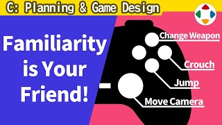
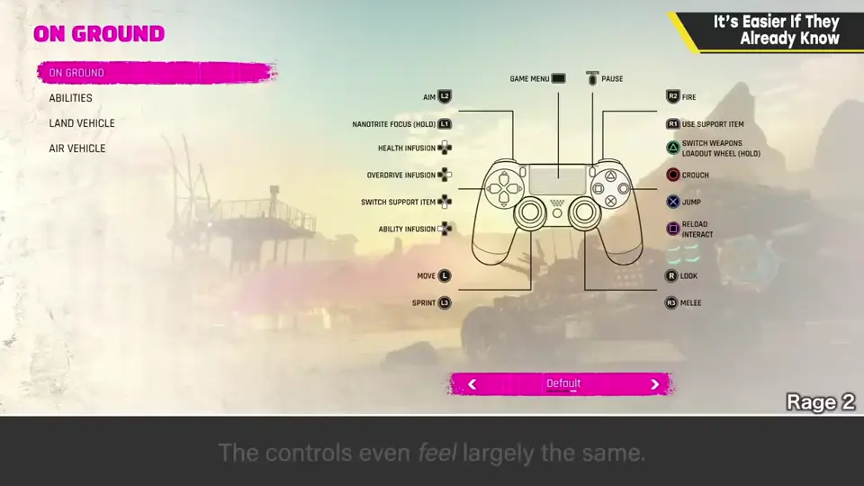
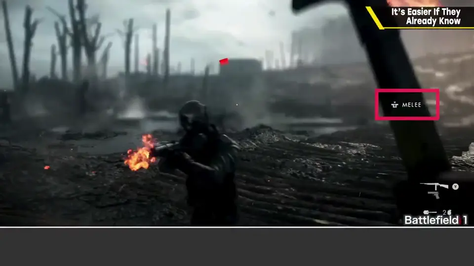
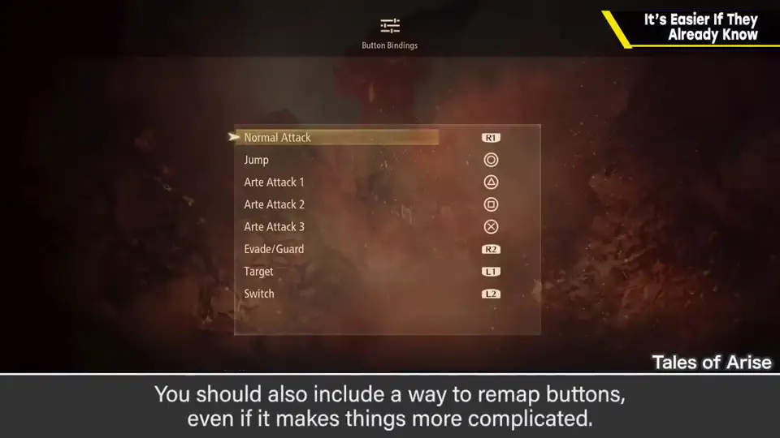
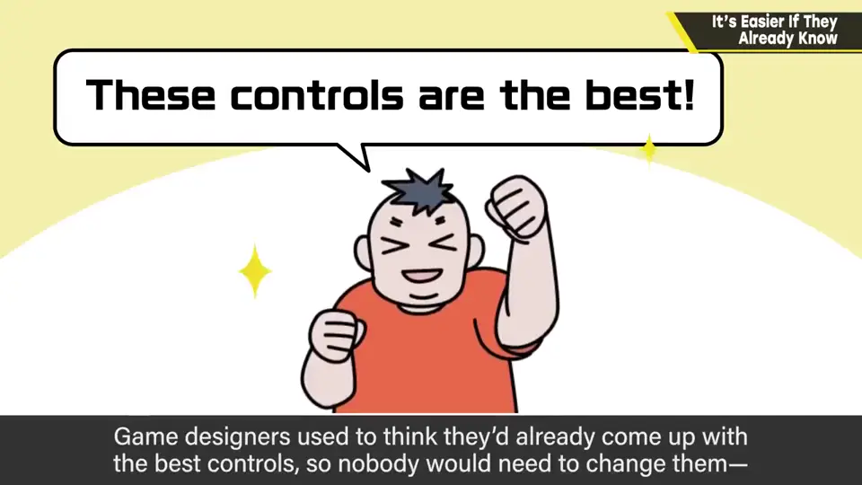
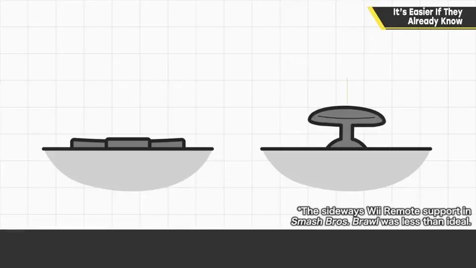
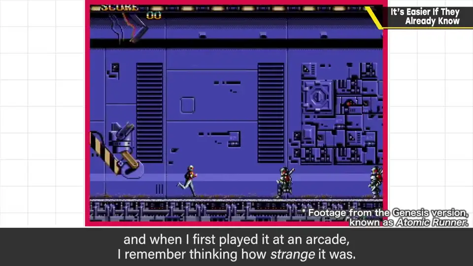

速览
欧美 FPS 的操作方法大体相同，连手感都很像，作为游戏可能感觉不到个性；但这与其说是游戏系统的独创性，不如说是更重视沉浸感、世界描写、剧本上的差异。必须时刻意识到有人对这个游戏类型一无所知；另一方面，能省略对已知事情的说明是很有帮助的优势——例如 FPS 里很少会逐一细说「R2 开枪、枪需要子弹、L1 扔手雷」，大概只是敌人出现时显示攻击按钮图标。与某作类似一般会被避免，但对业界标准（事实标准，de facto standard），利用就好——让人与电脑之间的「握手」稍微温和一点。而按键设置，哪怕让操作变复杂也一定要有。以前确实有过「游戏设计师想的操作就是推荐操作，所以不需要按键设置」的看法，但玩家想用自由的操作玩，游戏应尽量回应。不过偶尔有人要求让《大乱斗》能用十字键玩——这做不到：能取细腻数值的模拟摇杆和只能取 0 与 1 的十字键根本不同。话说回来，若无法按自己的想法操作，也只能放弃、用设定好的操作玩——改不了的就是改不了。题外话：街机《Chelnov》，樱井第一次玩时觉得很奇特——按钮往前走、上方向发射子弹、横向输入跳跃——结果原来是店员把线束接错了。只要努力什么都能适应，那种违和感有点有趣；操作标准化后这种乐趣就没了，想想也有点可惜。
1. FPS 的操作大同小异 0:03
欧美的 FPS 操作方法大体相同，连操作手感都很像。作为游戏，也许感觉不到什么个性。但这与其说是游戏系统的独创性，不如说是更重视沉浸感、世界描写和剧本上的差异。

2. 已知的事可以省略说明 0:32
必须时刻意识到：总有人对这个类型一无所知。另一方面，已知的东西可以省略说明，这是非常有帮助的优势。
以 FPS 为例，很少有游戏会逐一仔细说明「R2 开枪、枪要子弹、L1 扔手雷」，大概只在敌人出现时显示攻击按钮的图标而已。

3. 按键设置必不可少 1:20
而按键设置（key config），就算让操作变复杂，也一定要有。以前确实有过这种看法：游戏设计师设想的操作就是推荐操作，所以不需要按键设置。但玩家想用自由的操作来玩，游戏应尽量回应。



不过偶尔有人要求「让《大乱斗》能用十字键玩」——这不可能：能取细腻数值的模拟摇杆，与只能取 0 和 1 的十字键根本不同。话说回来，如果无法按自己想的操作，也只能放弃，用设定好的操作玩；改不了的就是改不了。
4. 题外话：接错线的 Chelnov 2:17
街机游戏《Chelnov》，樱井第一次在游戏中心玩时，一边玩一边想「这游戏真奇特」：按钮是往前走、上方向发射子弹、横向输入跳跃——结果原来只是店员把线束接错了。

只要努力，什么都能适应。那种违和感有点有趣；操作标准化之后这种乐趣就没了，想想也觉得有点可惜。
自测题
1. 欧美 FPS 操作相似有什么好处？
可以省略对玩家已知操作的说明，大多只需在敌人出现时显示攻击按钮图标。 0:32
2. 樱井对按键设置的态度？
即使让操作变复杂也必须提供，玩家想用自由的操作玩，游戏应尽量回应。 1:20
3. 为什么《大乱斗》不能改用十字键玩？
模拟摇杆能取细腻数值，十字键只有 0 和 1，根本不同。 1:56